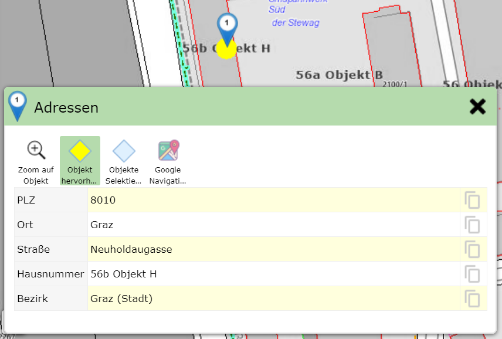
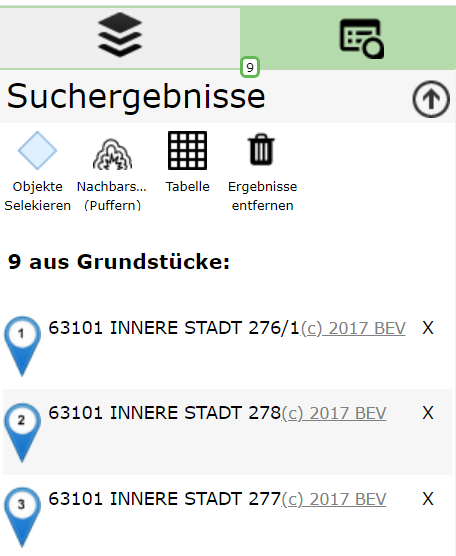
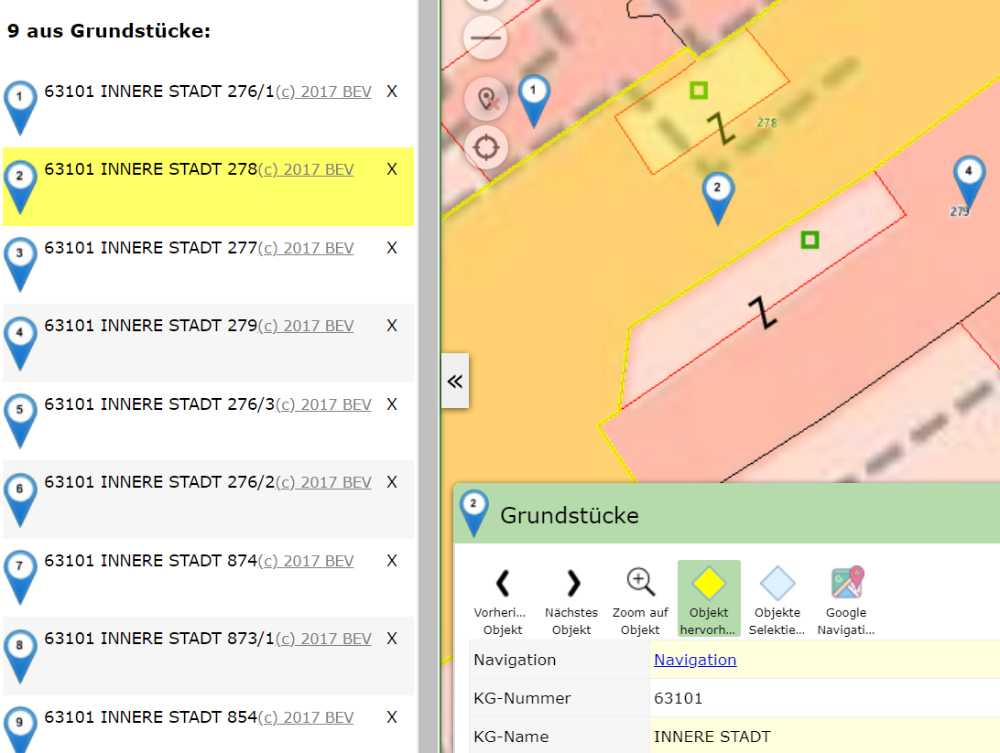
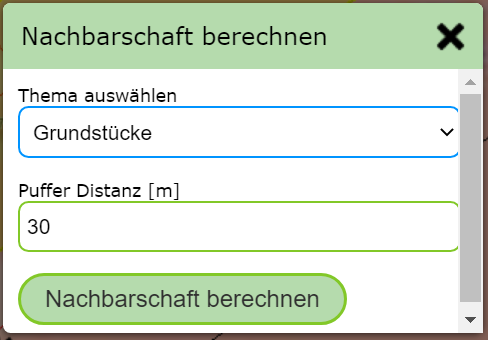
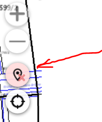
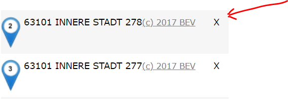
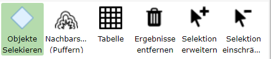
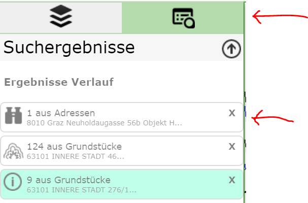

Suche und Abfrage Ergebnisse¶
Nach einer erfolgreichen Suche oder Abfrage werden die Ergebnisse in der Karte inklusive deren Sachdaten angezeigt. Welche Handhabung und Möglichkeiten von Ergebnissen wird in diesem Abschnitt beschreiben.
Detailergebnisse¶
Liefert eine Sucher oder Abfrage genau ein Ergebnis, wird neben der Markierung in der Karte (durch ein Marker Symbol), auch eine Dialog mit den Detailergebnissen (Sachdaten) geöffnet:
Die Sachdaten werden hier in einer Tabelle angezeigt. Die angezeigten Attribute sind bei jeder Themenebene unterschiedlich und werden vom Kartenautor festgelegt. Bei einer Adresse könnten die Attribute wir hier im Beispiel etwa Postleitzahl, Strasse, Hausnummer, Ort, Bezirk lauten. Neben dem Attributnamen wird der entsprechende Wert angezeigt.
Bemerkung
Tipp: ganz rechts wird in jeder Spalte noch ein graues Clipboard Symbol angezeigt. Damit kann durch Ergebnissen Klick der entsprechende Attributwert in die Zwischenablage kopiert und so weiter verarbeitet werden.
Bemerkung
Tipp: werden bei einem Thema sehr viele Attribute angezeigt, werden diese erst durch Scrollen nach unten sichtbar. Alternativ kann man die Höhe des Dialogs mit einem Klick auf die Titelzeile maximieren. Auf die gleiche Weise kann der Dialog auch wieder verkleinert werden.
Neben Attributwerten kann eine Abfrageergebnis auch noch weiterführende Links enthalten. Beispielsweise kann das Ergebnis einer Abfrage einer Gemeinde einen Link enthalten, der auf die Homepage der Gemeinde verweist. Diese werden dann ebenfalls in diesem Fenster angezeigt und können auch in die Zwischenablage kopiert werden.
Über der Ergebnistabelle befindet sich Werkzeuge. Je nach Abfrage können dies mehr oder weniger als die hier dargestellen Werkzeuge sein.
Immer dabei sind die Werkzeuge:
Zoom auf Objekt: Durch einen Klick wird der Kartenausschnitt auf das Ergebniss angepasst.
Objekt hervorheben: Ist dieser Button ausgewählt, wird das aktuelle Objekt hervorgehoben (in der Regel gelb hinterlegt)
Objekte selektieren: Durch auswählen dieses Buttons, werden die Ergebnisse ausgewählt (Selektiert, in der Regel cyan hinterlegt).
Bemerkung
Der Punkt Objekte selektieren bezieht sich auf alle Ergebnisse einer Abfrage und nicht nur das gerade angezeigte. Eine von Ergebnissen ist für die weiterverarbeitung der Ergebnissen notwendig, beispielsweise beim Editieren von Geo-Objekte oder bei der Übernahme von Abfrageergebnissen ins Redling (siehe später bei der Beschreibung der Ergebnisse). Außerdem ist die Selektion auch im Ausdruck sichtbar.
Ergebnisliste¶
Sind von einer Abfrage oder einer Suche mehrere Geo-Objekte betroffen, werden diese in der Karte angezeigt. Die Anzeige von Detailergebnissen erfolgt allerdings nicht sofort, weil immer nur ein Objekt in der Detailansicht angezeigt werden kann.
Bemerkung
eine Ausnahme ist die Tabellenansicht alle Ergebnisse.
Darum werden die Ergebnisse im ersten Schritt als Liste mit wenigen (Vorschau) Attributen angezeigt:
Die Liste erscheint als eigener Tab im linken Kartenviewer Frame neben dem Darstellungs Tab. Im Tab erscheint auch eine Zahl, die der Anzahl der Ergebnisse entspricht und auch sichtbar ist, wenn der Tab gerade nicht aktiv ist.
Im Inhalt für diesen Tab werden die Ergebnisse angezeigt und einige Werkzeuge angeboten. Klickt man auf eines der (Vorschau) Ergebnisse, werden die entsprechenden Detailergebnisse angezeigt und der Kartenausschnitt angepasst. Dabei wird das Geo-Objekt automatisch hervorgehoben (gelb hinterlegt), sowohl in der Karte als auch in der Liste mit den Vorschauergebnissen:
Eine Zuordnung der (Vorschau) Ergebnisse mit den Geo-Objekten in der Karte kann ebenfalls über die Nummer im Kartenmarker erfolgen.
Bemerkung
Tipp: Eine weiter Möglichkeit die Detailergebnisse eines Geo-Objektes besteht in einem Klick auf den entsprechenden Kartenmarker.
Werkzeuge in der Ergebnisliste
Oben in der (Vorschau) Ergebnisliste werden kontextabhängig weitere Werkzeuge angezeigt.
Objekte Selektieren: Entspricht dem Button, der auch bei den Detailergebnissen angezeigt wird. Mit werden alle Ergebnisse für die weitere Verarbeitung ausgewählt und cyan hinterlegt.
Nachbarschaftsbrrechnung (Puffern): Damit kann Puffer für die aktuellen Ergebnisse gelegt werden, aufgrund Detailergebnissen dann eine neue Abfrage durchgeführt wird.
In einem Dialog wird davor noch abgefragt, welches Thema die Nachbarschaftsbrrechnung betreffen und groß der Puffer gewählt werden sollte:
Tablelle anzeigen: Damit werden alle Ergebnisse in einer Tabelle angezeigt.
Die Tabelle kann ebenfalls wieder mit einem einem Klick auf die Titelzeile des Dialogs maximiert werden. Klickt man auch eine Zeile, wird die Tabelle geschlossen, die Detailergebnisse angezeigt und auf das entsprechende Geo-Objekt gezoomt. Zusätzlich bietet die Tabelle diverse Exportmöglichkeiten, z.B. Export nach MS-Excel (über CSV)
Ergebnisse entfernen: Damit werden die Ergebnisse aus der Karte und der Vorschauansicht entfernt.
Bemerkung
Profitipp: Abfrage und Suchergebnisse können aus der Karte immer entfernt werden, auch wenn die Vorschauliste nicht aktiv ist. Sind Abfrageergebnisse in der Karte, erscheint bei den Schnellwerkzeugen in der Karte ein zusätzliches Symbol:
Ein Klick entfernt ebenfalls alle Ergebnismarker aus der Karte und der Vorschauliste
Bemerkung
Tip: Werden Abfrageergebnisse entfernt, sind sie innerhalb einer Kartenviewer Sitzung nicht komplett verloren. Über die Ergebnisse Verlauf (siehe unten) kann immer wieder auf die Bereits durchgeführten Abfragen zugegriffen werden.
Ergebnisse erweitern/einschränken¶
Im Kartenviewer kann immer nur das Ergebnis einer Abfrage oder Suche angezeigt werden. Dennoch besteht die Möglichkeit, eine bestehendes Ergebnis nachträglich zu erweitern oder einzuschränken.
Am einfachsten eingeschränkt kann ein Ergebnis werden, indem der entsprechende Eintrag aus der Vorschauliste entfernt wird. Dazu wird (wenn mindestens zwei Ergebnisse vorhanden sind) ein x Symbol beim jedem Eintrag:
Damit wird dieses Objekt sofort aus der Liste und der entsprechende Marker aus der Karte entfernt.
Eine weitere Möglichkeit ist die geographische Einschränkung/Erweiterung von Ergebnissen. Dazu ist mit dem entsprechend Werkzeug ein bereits vorhandenes oder neues Objekt in der Karte anzuklicken.
Diese Werkezeuge befinden sich bei den Werkzeug über der Vorschauliste sind nur sichtbar, wenn die Ergebnisse ausgewählt (selektiert) sind:
Selektion erweitern: Werkzeug auswählen und in der Karte auf zusätzliche Geo-Objekte klicken
Selection einschränken: Werkzeug auswählen und in die Karte auf selektierte Objekte klicken
Bemerkung
Das Selektion einschränken Werkzeug ist nur sichtbar, solange mindestens zwei Ergebnisse vorliegen. Ein einzelnes Ergebnis kann nicht eingeschränkt sondern nur entfernt werden.
Bemerkung
Ob diese Werkzeuge angezeigt werden, obliegt dem Kartenautor. Wenn für eine Anwendung diese Funktionalität nicht erwünscht ist, werden diese nie angezeigt.
Ergebnisse Verlauf (History)¶
Wie oben schon erwähnt können Abfrageergebnisse auf unterschiedliche Weise aus der Karte entfernt werden:
Entfernen Button über der Vorschau Liste klicken
Marker Entfernen Button beim den Schnellwerkzeugen (Profitipp)
Neue Suche/Abfrage auslösen entfernt automatisch die aktuell dargestellten Ergebnisse
Oft ist es allerdings wünschenswert noch einmal auf bereits gemachte Such/Abfrageergebnisse zuzugreifen. Mach man beispielsweise eine Nachbarschaftsberechnung, werden die ursprünglichen Ergebnisse (auf denen die Nachbarschaftsberechnung beruht) überschrieben. Um später wieder auf diese Ergebnisse zugreifen zu können, dient der Ergebnisse Verlauf.
Der Verlauf wird im Tab für die Abfrageergebnisse angeführt (falls aktuell Ergebnisse angezeigt werden, befindet sich der Verlauf am Ende der Liste):
Alle bereits getätigten Abfragen (innerhalb einer Kartenviewer Sitzung) werden angezeigt. Der (Vorschau) Text gibt an, welche Themenebene die Ergebnisse geliefert hat bzw. wie viele Geo-Objekte betroffen sind.
Das vorangestellte Symbol zeigt noch an, wie dieses Ergebnisse erzeugt worden ist:
Fernglas Symbol: Das Ergebnis wurde über eine Suche erzeugt
Puffer Symbol: Das Ergebnis wurde über eine Nachbarschaftsberechnung erzeugt
Identifizieren Symbol: Das Ergebnis wurde über eine Abfrage erhalten
Kickt man auf ein Verlaufselement, wird die Abfrage soft wieder hergestellt. Möchte man ein Element aus dem Verlauf endgültig entfernen kann das mit dem X Symbol erreicht werden. Die entsprechenden Abfrageergebnisse sind danach endgültig entfernt.